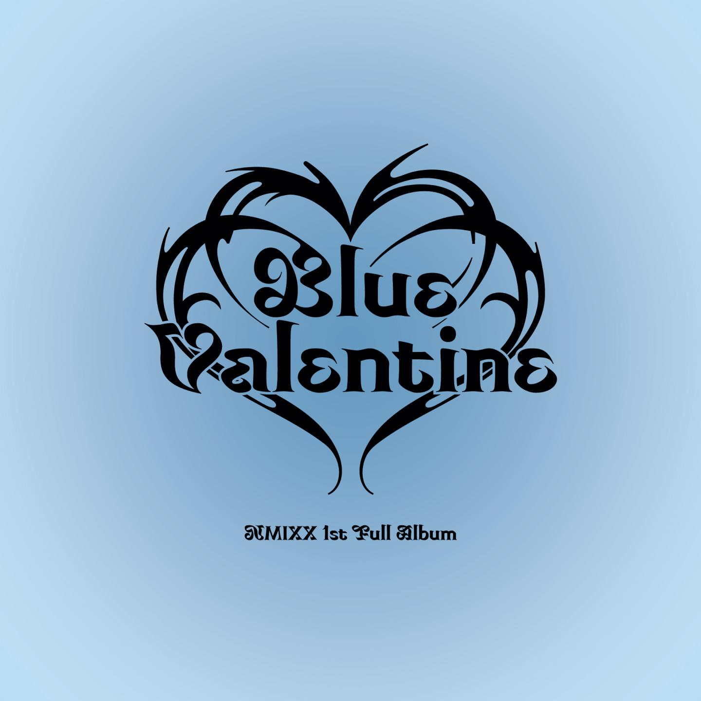
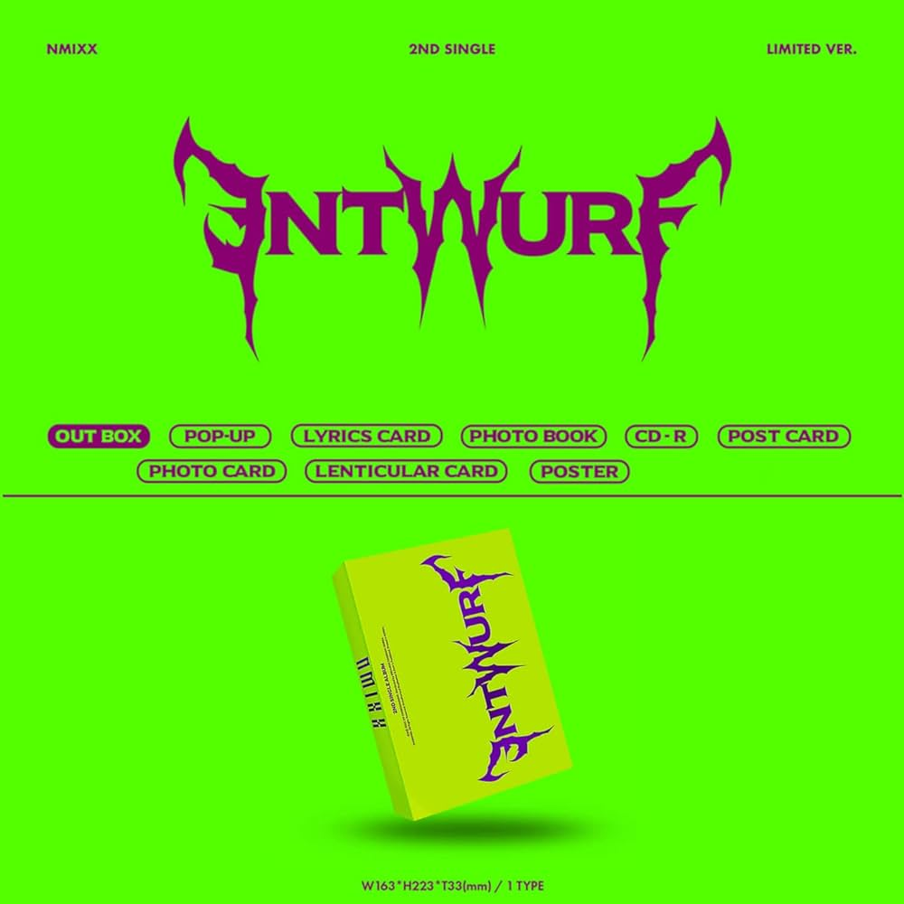
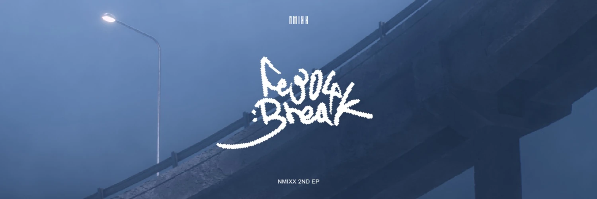
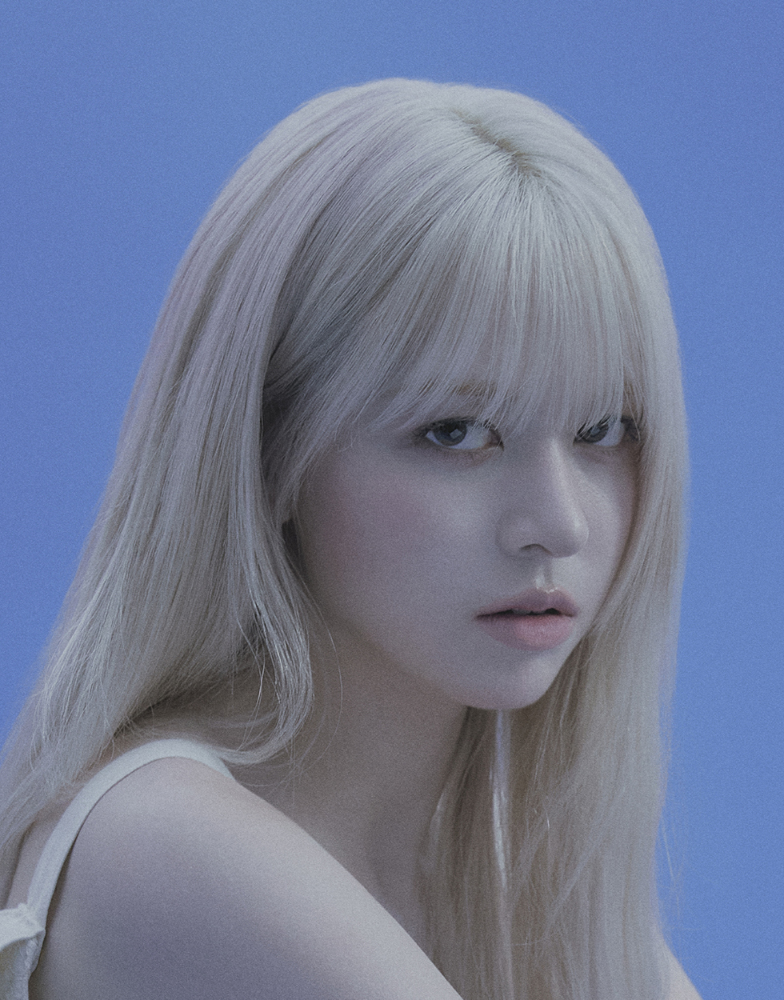
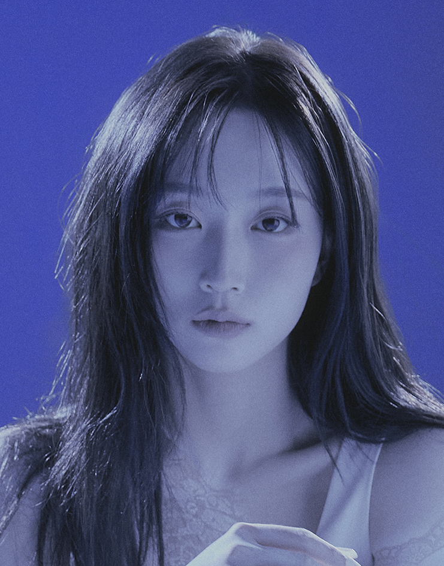
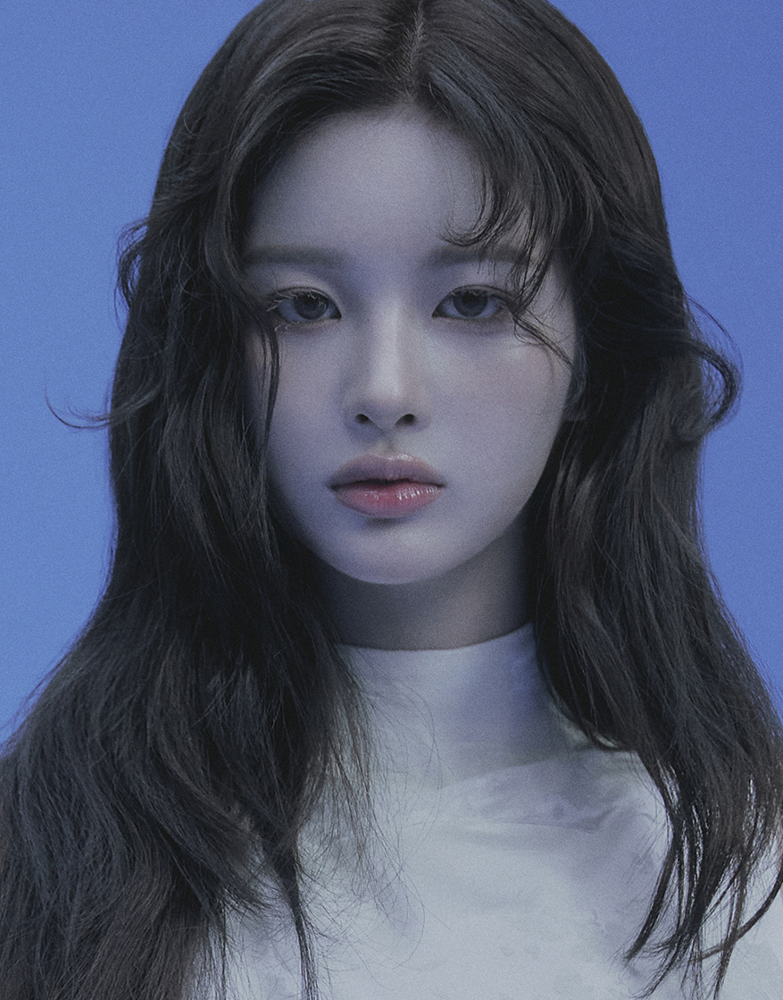
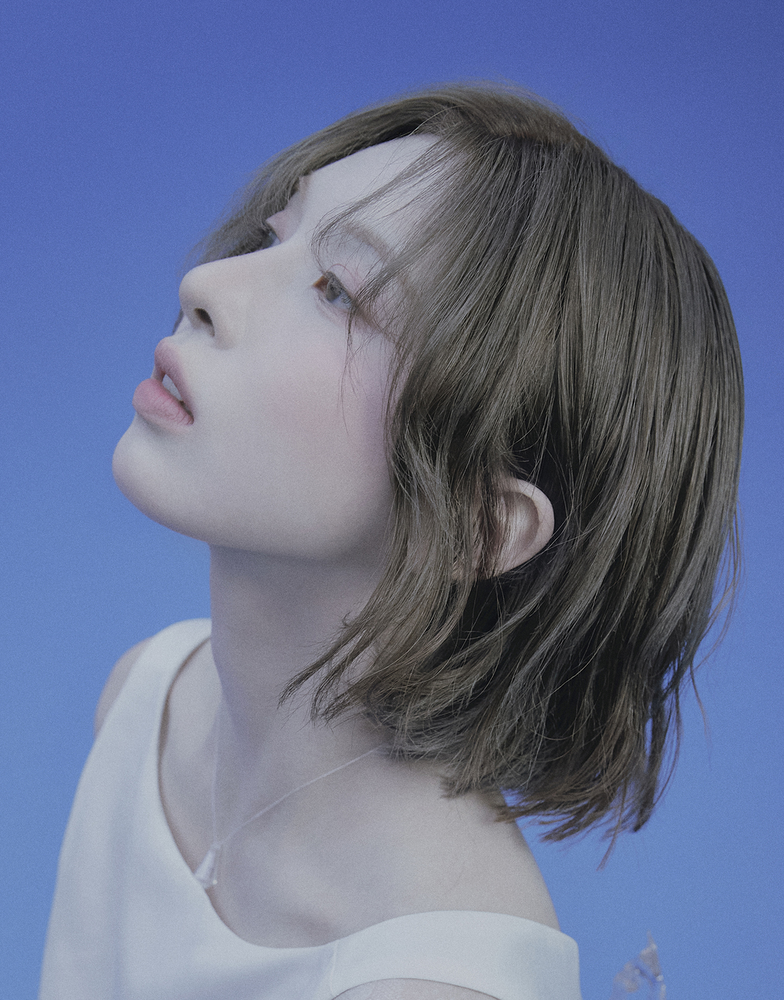
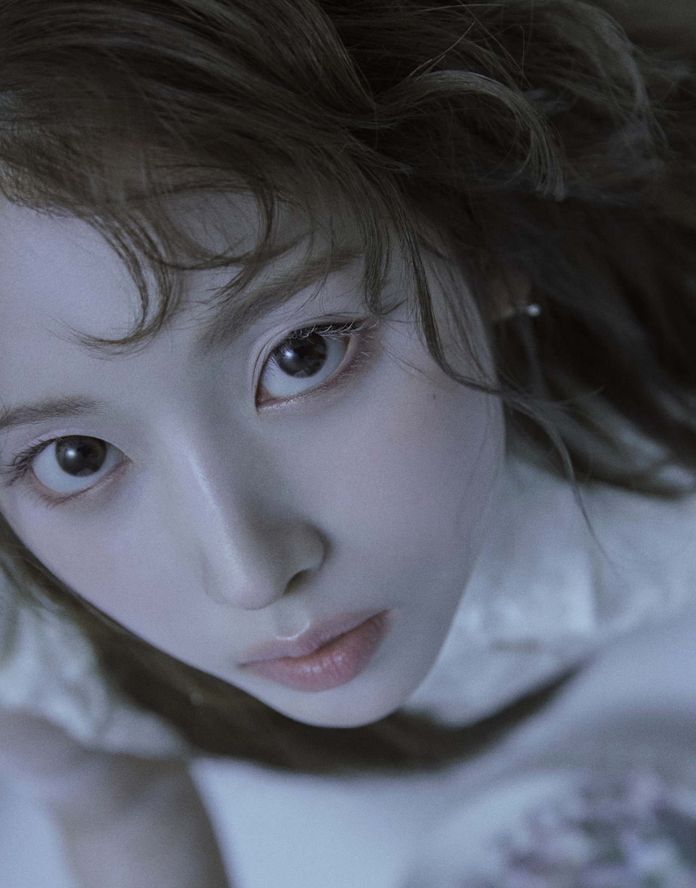
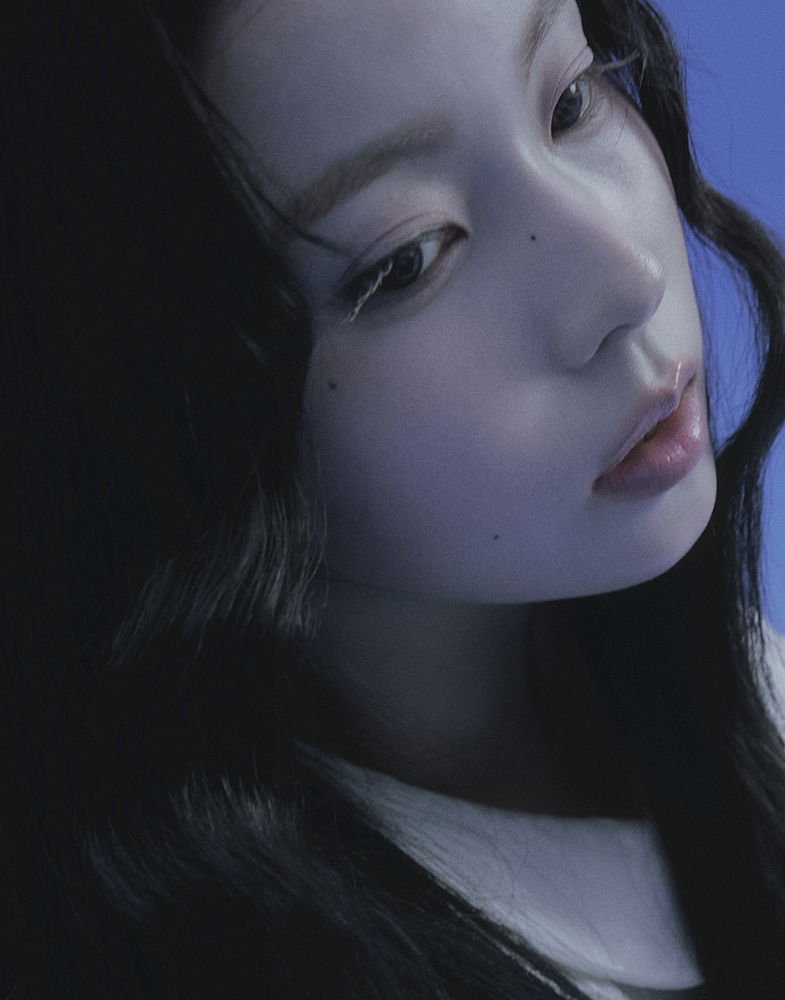

Sullyoon
I'm Designer
About
Sullyoon (薛侖娥) 是 JYP 娛樂旗下女子團體 NMIXX 的成員。以出眾的視覺效果和紮實的唱跳實力聞名，是隊內的門面擔當與核心領唱之一。
Vocalist & Visual of NMIXX
「比起單純的漂亮，我更希望能成為讓粉絲感到自豪、不斷進步的歌手。」
- Birthday: 26 January 2004
- Website: nmixx.jype.com
- City: Daejeon, South Korea
- Age: 22
- Degree: Hanlim Multi Art School
- Email: contact@jype.com
Sullyoon 於 2022 年以單曲專輯《AD MARE》正式出道。在出道前就因同時通過韓國三大經紀公司（SM、YG、JYP）的試鏡而備受注目。她不僅擁有如仙女般精緻的五官，其清澈且具有爆發力的音色也讓她在隊內複雜的「MIXX POP」風格中展現了多樣的魅力。
Albums/Singles Released with NMIXX
MV Views (M) O.O / DICE / DASH
Group Members NMIXX Team Size
簡介
Sullyoon 自 2022 年作為 NMIXX 成員出道以來，憑藉卓越的實力和舞台表現力，在 K-POP 樂壇寫下了輝煌的成績。
Profile Summary
SULLYOON (薛侖娥)
現任 JYP Entertainment 旗下女團 NMIXX 成員，擔任 Vocalist 與 Visual。以極具辨識度的清亮嗓音與精緻的視覺形象著稱。
- South Korea, Seoul (JYP Center)
- Official IG: @nmixx_official
- Debut Date: 2022.02.22
Education
Hanlim Multi Art School (翰林演藝藝術高等學校)
2020 - 2023
Department of Entertainment
於知名演藝學校接受專業歌唱與舞蹈訓練，並於 2023 年正式畢業。
Career Milestones
NMIXX Core Member
2022 - Present
JYP Entertainment
- 參與出道單曲《AD MARE》及主打歌〈O.O〉。
- 於《Love Me Like This》時期展現爆發力十足的現場演唱實力。
- 代表作品：〈DICE〉, 〈DASH〉, 〈See that?〉。
Special MC & Media Appearance
2023 - 2024
Music Program Appearances
- 多次受邀擔任音樂節目（如《Show! Music Core》）特別主持人。
- 參與多場海外巡迴演唱會，展現流暢的粉絲互動與舞台掌控力。
演藝作品
記錄 Sullyoon 自出道以來的音樂專輯、精彩舞台與個人魅力瞬間。
- 全部 All
- 音樂專輯 Albums
- 精彩舞台 Stages




隊員簡介 Members
NMIXX 是一組以「MIXX POP」風格聞名的全能女子團體。以下是六位成員的詳細介紹。

Lily (朴珍)
定位： Main Vocalist
特點： 擁有長達 7 年的練習生經驗，歌聲極具靈魂與爆發力，能輕鬆駕馭高難度的轉音與高音。其開朗的個性與紮實的唱功讓她成為隊內的技術核心。

Haewon (吳海嫄)
定位： Leader, Main Vocalist
特點： 具備溫暖且清澈的音色，在現場演唱中表現極度穩定。作為隊長，她以幽默的口才與卓越的領導力帶領團隊，是團隊中最重要的平衡者。

Sullyoon (薛侖娥)
定位： Vocalist, Visual
特點： 以驚人的門面視覺受到廣大關注，其精緻的五官與優雅的氣質在舞台上非常吸睛。同時，她的歌聲具有清脆的爆發力，是兼具美貌與實力的全能成員。

Bae (裴真率)
定位： Vocalist, Dancer
特點： 隊內唯一的中低音域歌手，磁性嗓音為歌曲增添了深度。擁有帥氣的高挑身材，其反差萌的搞笑個性和強大的舞台魅力，讓她深受粉絲喜愛。

Jiwoo (金智佑)
定位： Main Rapper, Dancer
特點： 舞蹈動作充滿力度與彈性，Rap 風格極具節奏感。她活潑好動的性格與成熟的舞台掌控力形成強烈對比，是為舞台注入活力的關鍵人物。

Kyujin (張圭珍)
定位： Main Dancer, Rapper, Maknae
特點： NMIXX 的全能忙內，具備超越年齡的專業與穩定度。無論是在舞蹈的流暢感還是歌唱表現上都無懈可擊，展現了「鑽石級」的實力。